Otologists and skull base surgeons from Asia, Europe, the Middle East, Africa and the United States, teaching at the lectern, the demonstration table and the dissection bench.
아시아·유럽·중동·아프리카·미국의 이과 및 두개저 외과의가 강단, 시연 테이블, 해부 실습대에서 가르칩니다.
Course directors
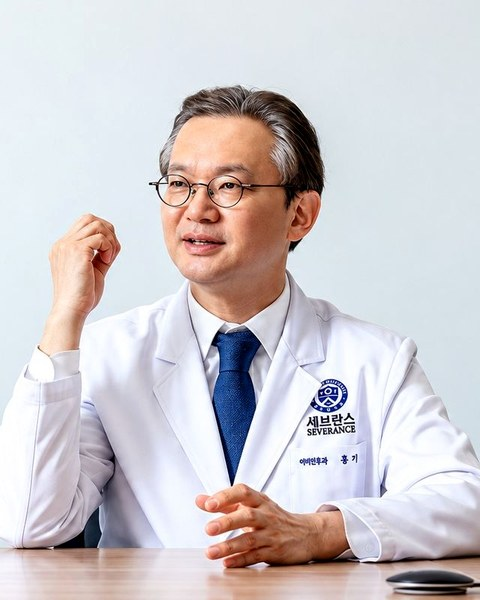
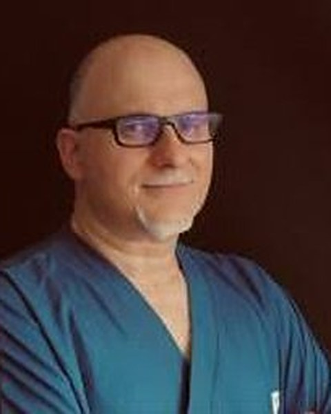
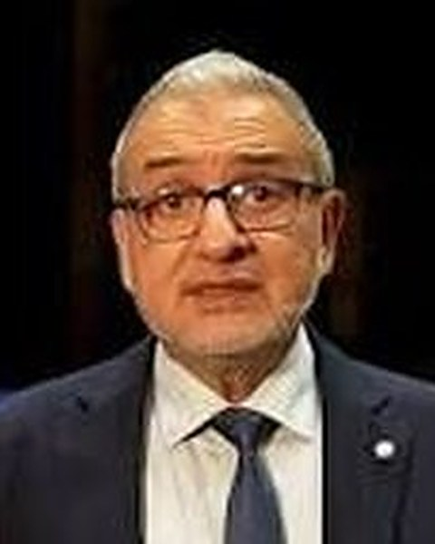
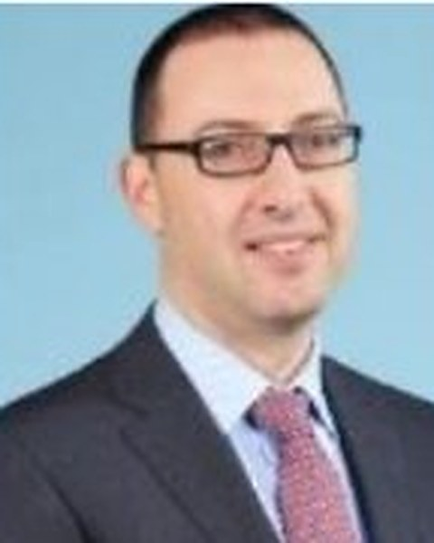
International speakers
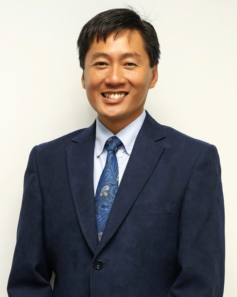
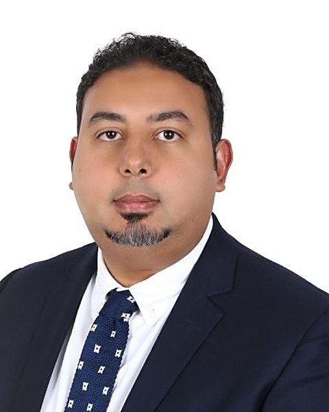
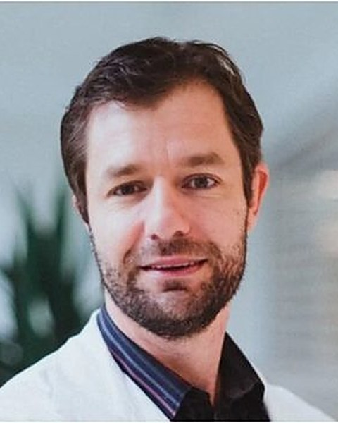
Naoki OishiKeio University · Japan
Takeshi FujitaKobe University · Japan
Alessia RubiniUniversity of Verona · Italy
Sree Ram MurthyIndia
Vinod FelixIndia
V. NarendrakumarIndia
Gerard LapinaPhilippines
Asralt NaranbaatarMongolia
Khalid Al ZaabiUAE
Domestic speakers
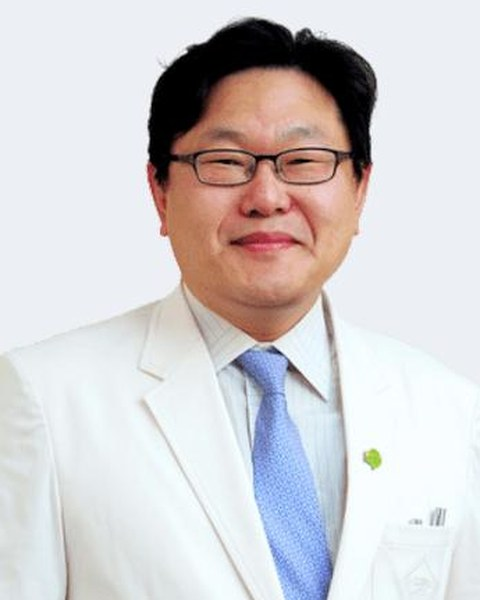
Bum Cho JeonThe Catholic University of Korea
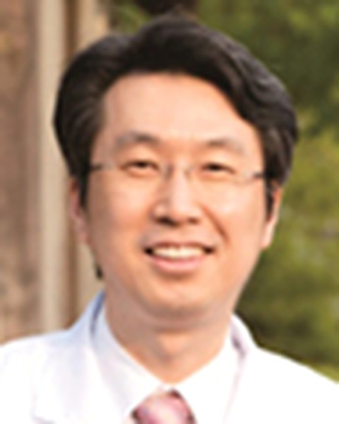
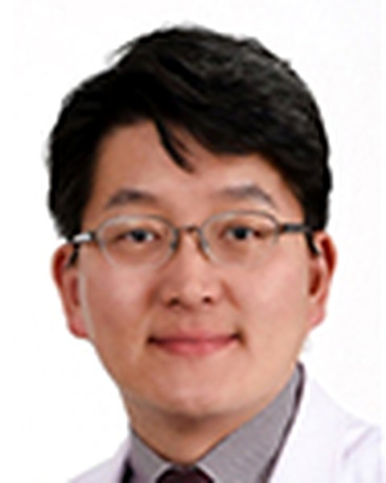
Ho Jun SeolSungkyunkwan University
Hyun Min LeeKorea
Faculty of YEES 2020
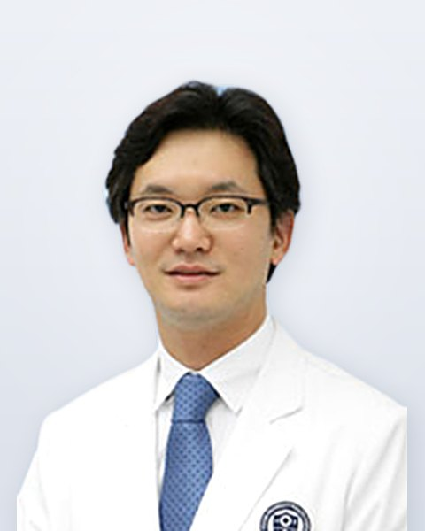
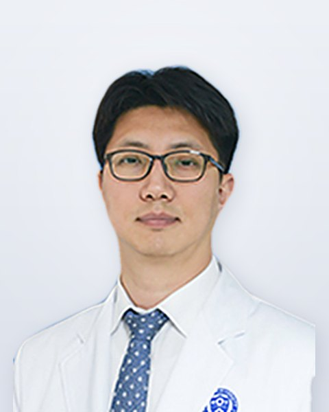
Daniele MarchioniUniversity of Verona, Italy
Nirmal PatelMacquarie University Hospital, Australia
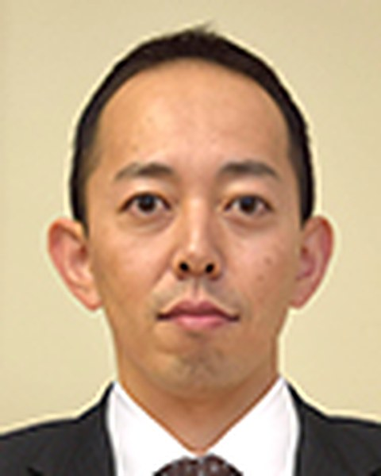
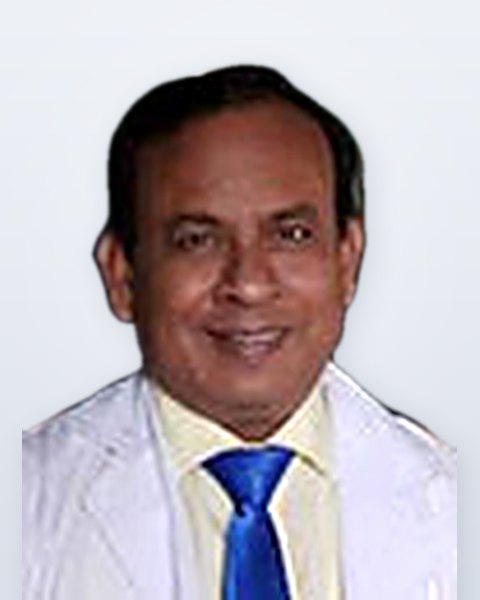
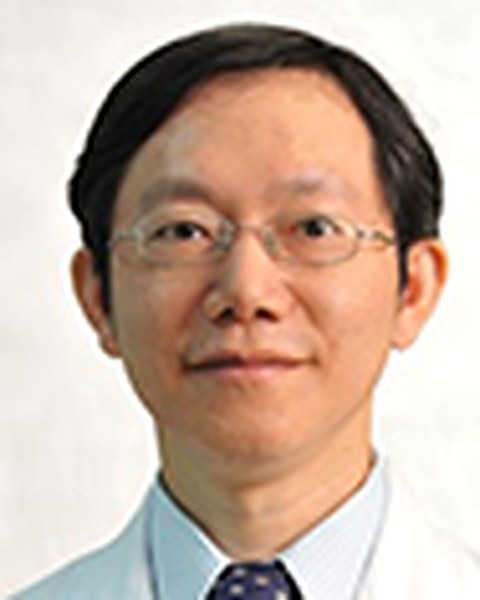
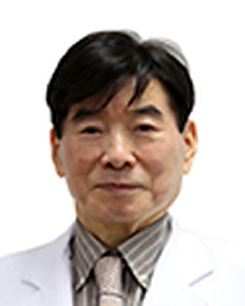
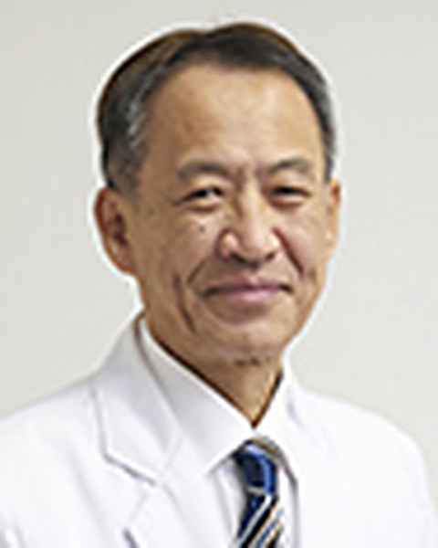
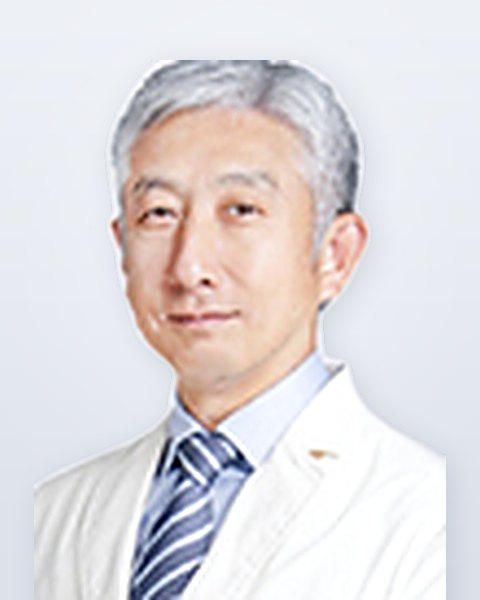
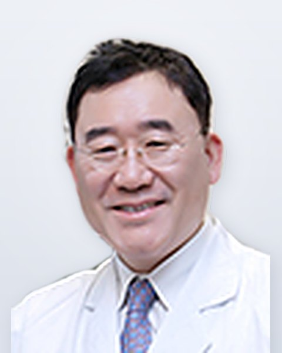
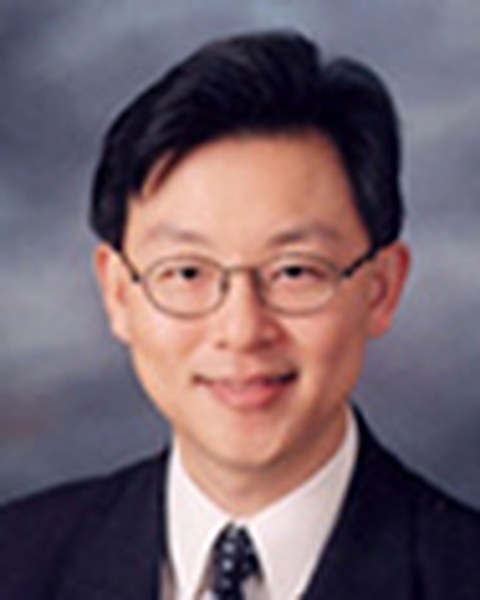
Jun Ho LeeSeoul National University
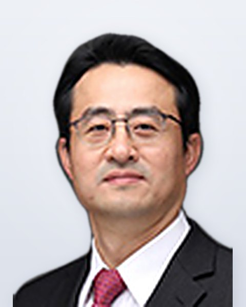
Beom Cho JunThe Catholic University of Korea
Sung Il NamKeimyung University
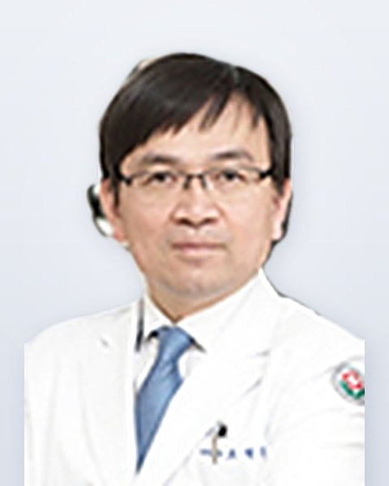
Jong Dae LeeSoonchunhyang University
Soo Keun KongPusan National University
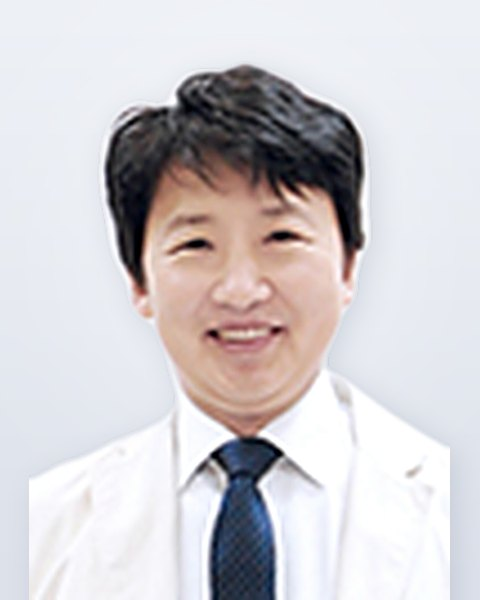
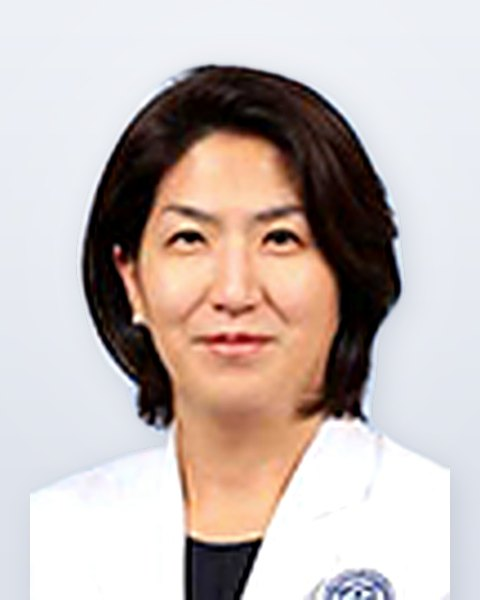
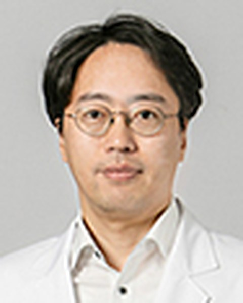
Eun Jin SonYonsei University
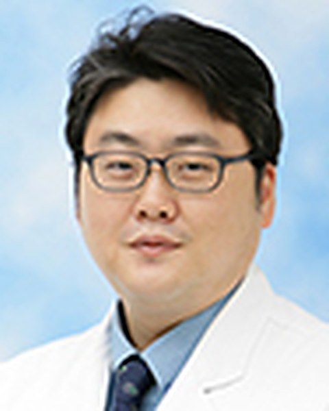
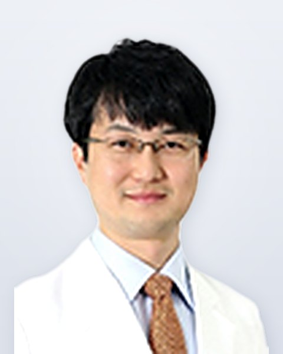
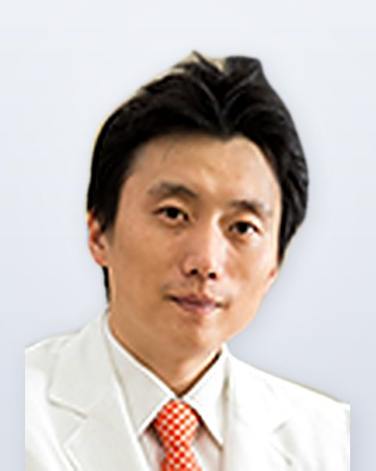
Woo Seok KangUlsan University
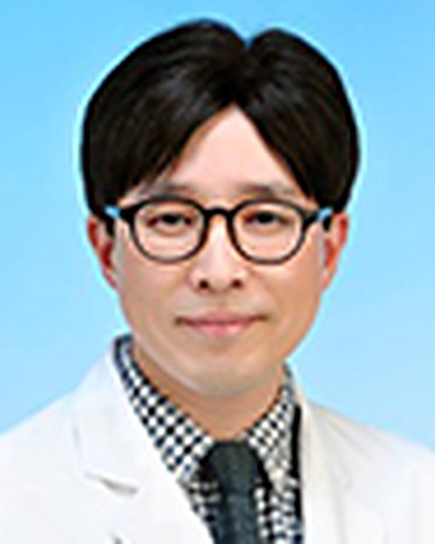
Mee Hyun SongMyongji Hospital
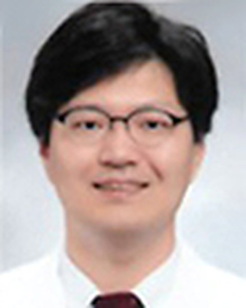
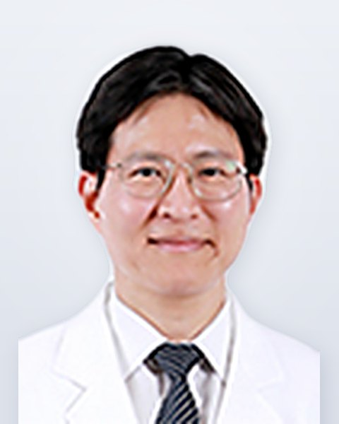
Sang Joon ParkSeoul National University / Medical IP